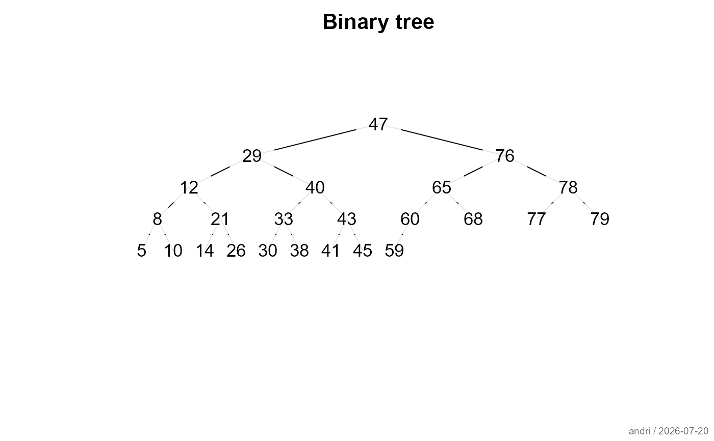
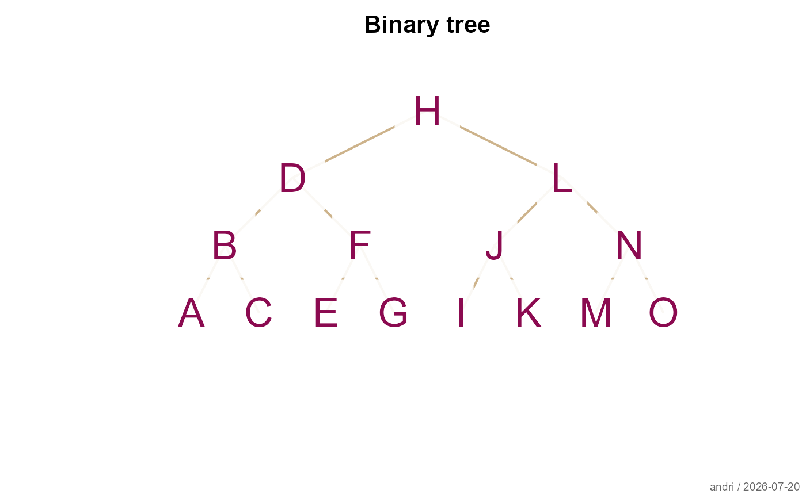
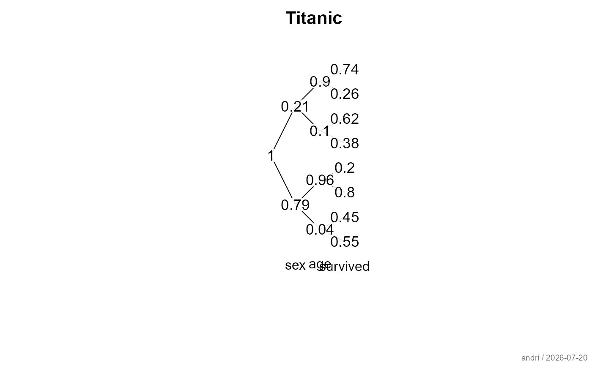

Create a binary tree of a given number of nodes n. Can be used to
organize a sorted numeric vector as a binary tree.
Arguments
- x
numeric vector to be organized as binary tree.
- main
main title of the plot.
- horiz
logical, should the plot be oriented horizontally or vertically (default).
- text
properties of the text, can be any of the arguments of
boxedText(besides geometry and label).- line
properties of the line segments (
col,lwd,lty).- ...
the dots are sent to
canvas.
Details
If we index the nodes of the tree as 1 for the top, 2–3 for the next horizontal row, 4–7 for the next, ... then the parent-child traversal becomes particularly easy. The basic idea is that the rows of the tree start at indices 1, 2, 4, ....
binaryTree(13) yields the vector c(8, 4, 9, 2, 10, 5, 11, 1, 12, 6, 13,
3, 7) meaning that the smallest element will be in position 8 of the tree,
the next smallest in position 4, etc.
Note
Substantially based on code by Terry Therneau, with major extensions and improvements by the package author.
See also
Other plot.special:
plotCirc(),
plotMiss(),
plotPolar(),
plotPropCI(),
plotTernary(),
plotTimeSeries(),
plotTreemap(),
plotWeb()
Examples
bedrock::binaryTree(12)
#> [1] 8 4 9 2 10 5 11 1 12 6 3 7
x <- sort(sample(100, 24))
z <- plotBinaryTree(x, cex=0.8)

plotBinaryTree(LETTERS[1:15],
text=list(col="deeppink4", cex=2),
line=list(col="navajowhite3", lwd=2))

# Plot example - Titanic data, for once from a somwhat different perspective
tab <- apply(Titanic, c(2,3,4), sum)
cprob <- c(1, prop.table(apply(tab, 1, sum))
, as.vector(aperm(prop.table(apply(tab, c(1,2), sum), 1), c(2, 1)))
, as.vector(aperm(prop.table(tab, c(1,2)), c(3,2,1)))
)
plotBinaryTree(round(cprob[bedrock::binaryTree(length(cprob))],2), horiz=TRUE, cex=0.8,
main="Titanic")
text(c("sex","age","survived"), y=0, x=c(1,2,3)+1)
